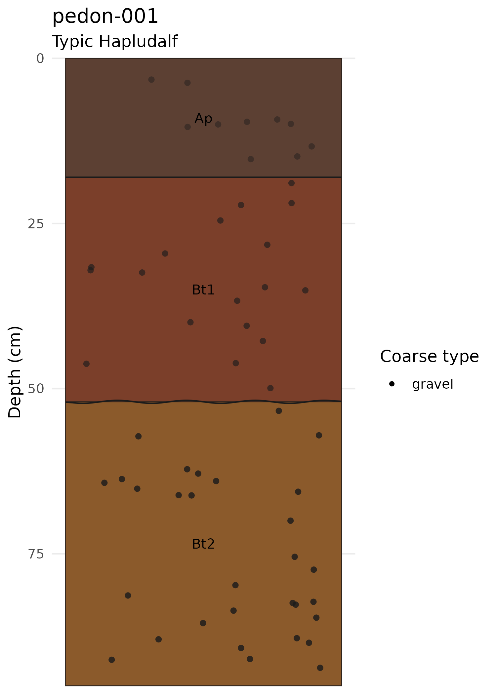
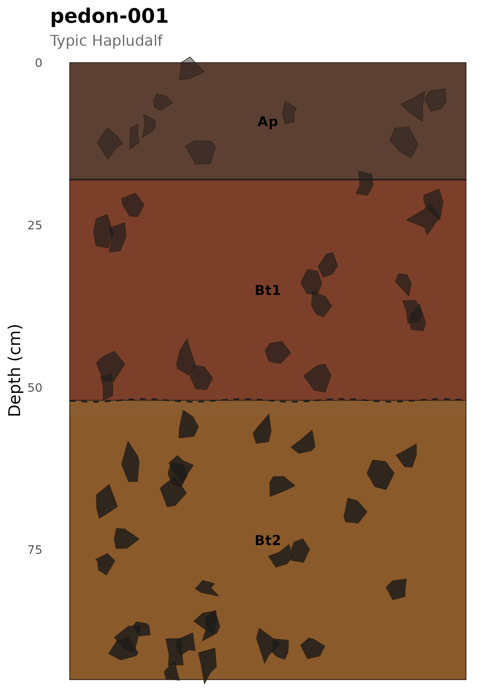
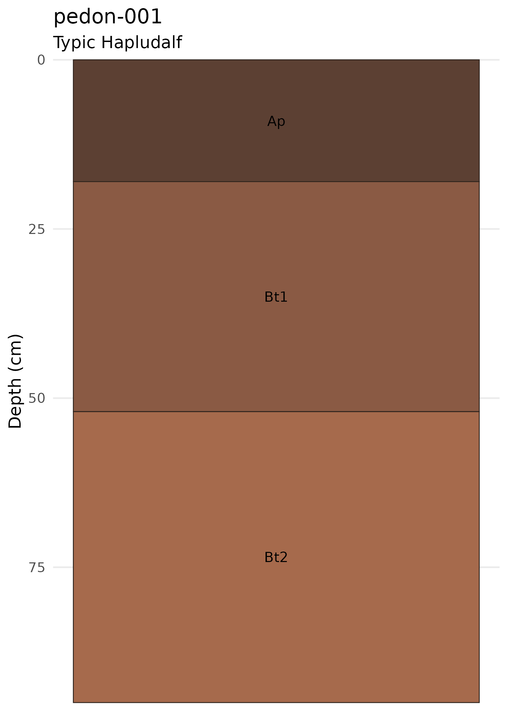

Overview
soilgraph provides tools for structuring soil profile descriptions, exporting them to JSON, and generating profile visualizations. A typical workflow is:
- Prepare a two-column field description table (Depth + description).
- Parse descriptions into a structured soil profile.
- Visualize the profile.
- Export to the
.soil.jsonformat for archival and exchange.
Creating a field description table
Field notes are represented as a data frame with a Depth
column containing depth ranges (e.g. "0-18 cm") and a
description column with natural language descriptions:
field_notes <- data.frame(
Depth = c("0-18 cm", "18-52 cm", "52-95 cm"),
description = c(
"Ap dark brown silt loam moist clear smooth few subangular weak fragments with granular structure",
"Bt1 reddish brown clay loam slightly moist gradual wavy common rounded moderate fragments with clay films",
"Bt2 brown clay dry diffuse irregular many subrounded strong fragments with strong blocky structure"
)
)
field_notes
#> Depth
#> 1 0-18 cm
#> 2 18-52 cm
#> 3 52-95 cm
#> description
#> 1 Ap dark brown silt loam moist clear smooth few subangular weak fragments with granular structure
#> 2 Bt1 reddish brown clay loam slightly moist gradual wavy common rounded moderate fragments with clay films
#> 3 Bt2 brown clay dry diffuse irregular many subrounded strong fragments with strong blocky structureParsing descriptions
derive_soil_horizons() extracts horizon properties
(texture, color, moisture, boundary, coarse fragments) from the
description text and returns a tidy table:
horizons <- derive_soil_horizons(field_notes)
horizons
#> Depth
#> 1 0-18 cm
#> 2 18-52 cm
#> 3 52-95 cm
#> description
#> 1 Ap dark brown silt loam moist clear smooth few subangular weak fragments with granular structure
#> 2 Bt1 reddish brown clay loam slightly moist gradual wavy common rounded moderate fragments with clay films
#> 3 Bt2 brown clay dry diffuse irregular many subrounded strong fragments with strong blocky structure
#> Horizon Top Bottom Texture Moisture Color BoundaryGrade
#> 1 Ap 0 18 silt loam moist #5C4033 clear
#> 2 Bt1 18 52 clay loam slightly moist #7B3F2A gradual
#> 3 Bt2 52 95 clay dry #8B5A2B diffuse
#> BoundaryShape CoarseAbundance CoarseShape CoarseGrade CoarseType CoarseSize
#> 1 smooth few subangular weak <NA> <NA>
#> 2 wavy common rounded moderate <NA> <NA>
#> 3 irregular many subrounded strong <NA> <NA>
#> CoarseColor CoarsePercent Notes
#> 1 <NA> NA fragments with granular structure
#> 2 <NA> NA fragments with clay films
#> 3 <NA> NA fragments with blocky structureThe parser recognizes two input modes:
-
Depth ranges:
"0-18 cm","18-52 cm","52-95 cm" -
Top depths only:
"0","18","52"— requires aprofile_bottomargument.
top_depth_notes <- data.frame(
Depth = c("0", "18", "52"),
description = c(
"Ap dark brown silt loam moist clear smooth",
"Bt1 reddish brown clay loam gradual wavy",
"Bt2 brown clay dry diffuse irregular"
)
)
horizons_top <- derive_soil_horizons(top_depth_notes, profile_bottom = 95)
horizons_top[, c("Horizon", "Top", "Bottom", "Texture", "Color")]
#> Horizon Top Bottom Texture Color
#> 1 Ap 0 18 silt loam #5C4033
#> 2 Bt1 18 52 clay loam #7B3F2A
#> 3 Bt2 52 95 clay #8B5A2BBuilding a soil profile object
soil_profile_from_table() converts a field notes table
into a soil_profile object, which is the primary data
structure used by all plotting and export functions:
profile <- soil_profile_from_table(
field_notes,
site_id = "pedon-001",
classification = list(
system = "Soil Taxonomy",
taxon = "Typic Hapludalf"
),
metadata = list(country = "Chile", land_use = "cropland")
)You can also build profiles manually from individual horizons:
h1 <- new_soil_horizon(0, 18, label = "Ap", color = "#5C4033",
texture = "silt loam", boundary_grade = "clear", boundary_shape = "smooth")
h2 <- new_soil_horizon(18, 52, label = "Bt1", color = "#8A5A44",
texture = "clay loam", boundary_grade = "gradual", boundary_shape = "wavy")
h3 <- new_soil_horizon(52, 95, label = "Bt2", color = "#A66A4C",
texture = "clay", boundary_grade = "diffuse", boundary_shape = "irregular")
profile_manual <- new_soil_profile(
site_id = "pedon-001",
horizons = list(h1, h2, h3),
classification = list(system = "Soil Taxonomy", taxon = "Typic Hapludalf")
)Use validate_soil_profile() to check depth ordering and
overlap constraints:
validate_soil_profile(profile_manual)Plotting
Profile with coarse fragment markers
Point-based markers encode fragment type (shape), size (point size), and cementation grade (alpha):
plot_soil_profile_fragments(profile, seed = 42)
Profile with coarse fragment point markers.
Advanced visualization
The advanced renderer uses polygon-based fragments and irregular boundary lines:
plot_soil_profile_advanced(profile, seed = 42)
#> Scale for fill is already present.
#> Adding another scale for fill, which will replace the existing scale.
#> Scale for alpha is already present.
#> Adding another scale for alpha, which will replace the existing scale.
Advanced profile with polygon fragments, boundaries, and transition zones.
Plotting directly from field notes
For quick visualization without creating objects manually:
plot_soil_description(field_notes, site_id = "pedon-001")Plot directly from field description table.
Exporting and importing JSON
The .soil.json format stores profiles with all metadata
in a standardized schema:
# Write to a temporary file
tmp <- tempfile(fileext = ".soil.json")
write_soil_json(profile, tmp)
# Inspect the JSON structure
cat(readLines(tmp, n = 15), sep = "\n")
#> {
#> "schema_version": "0.1.0",
#> "site_id": "pedon-001",
#> "classification": {
#> "system": "Soil Taxonomy",
#> "taxon": "Typic Hapludalf"
#> },
#> "metadata": {
#> "country": "Chile",
#> "land_use": "cropland"
#> },
#> "horizons": [
#> {
#> "top": 0,
#> "bottom": 18,Read it back:
profile_reloaded <- read_soil_json(tmp)
profile_reloaded$site_id
#> [1] "pedon-001"
profile_reloaded$classification$taxon
#> [1] "Typic Hapludalf"
length(profile_reloaded$horizons)
#> [1] 3Reading bundled example data
The package ships with example files in
inst/extdata/:
json_path <- system.file("extdata", "example.soil.json", package = "soilgraph")
example_profile <- read_soil_json(json_path)
plot_soil_profile(example_profile)
Next steps
- Learn about the advanced graphical engines in
vignette("graphical-engines"). - Explore the soil data model and supported vocabulary in
vignette("soil-data-model"). - Browse a gallery of rendering examples in
vignette("rendering-examples").